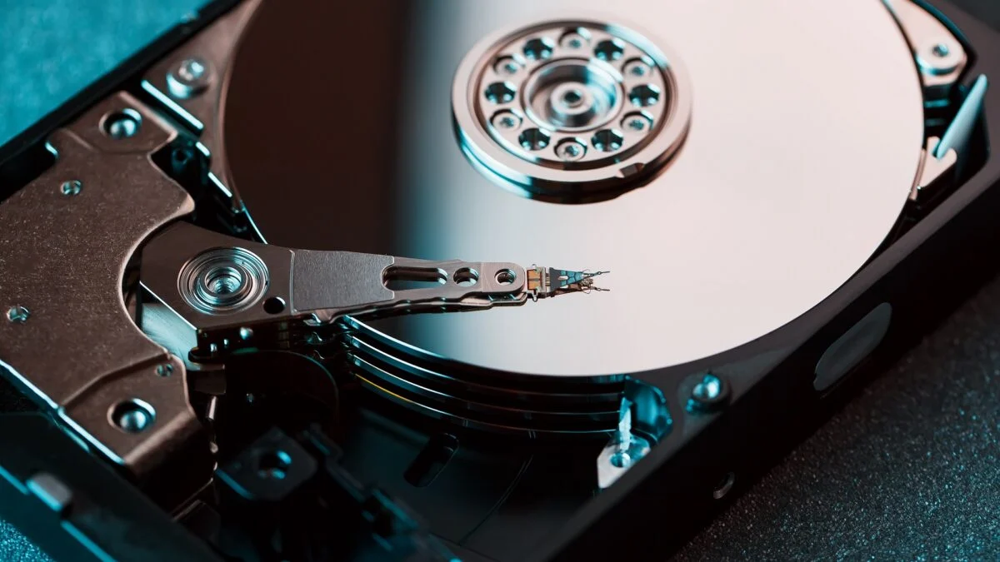

Storage
je elektromechanické nebo elektronické zařízení pro záznam a čtení adresovatelných dat, paměť o velké kapacitě a s pomalejším přístupem než operační paměť RAM. Používá se v počítačích jako sekundární a záložní paměť, ve spotřební elektronice k dočasnému nebo trvalému uchovávání většího množství dat.
Historie
Předchůdcem pevných disků byla magnetická páska a magnetický buben, tyto ovšem trpěly o několik řádu delšími přístupovými dobami (než se pásek převinul). První komerční pevné disky se objevily v roce 9561, nejprve pro sálové počítače. Díky stále důmyslnějším technologiím se parametry pevných disků za 50 let zlepšily o 3 až 8 řádů, tento trend se však od roku 2010 patrně zpomaluje, protože disky se blíží hranici fyzikálních možností (limity se obcházejí zahřívání povrchu leserem obdobně jako u CD-ROM, plnění speciálními plyny atd.). Jejich největším konkurentem jsou polovodičové paměti SSD, které neobsahují žádné pohyblivé součásti. Jsou menší, úspornější, o tři řády rychlejší a spolehlivější než paměti magnetické. Na rozdíl od „volatilní“ RAM paměti, jejíž obsah se při odpojení od zdroje proudu ztrácí, jsou HDD/SSD non-volatilní, tedy jejich obsah zůstává zachován (ovšem časem degraduje a za několik desítek let se stává nečitelným). Označení „pevný disk“ se často užívá v širokém slova smyslu, takže může zahrnovat i SSD úložiště a další druhy pamětí, pokud plní stejnou funkci a pro software se jeví jako vnější paměťové zařízení, které se dá adresovat.

HDD
Ukládání a čtení probíhá pomocí magnetické indukce. Skládá se z pohonu a vřetene, na něž je navlečena kruhová deska, či několik desek (podle potřebné kapacity) s magnetickým povrchem, který zapisují a snímají pohyblivé hlavy, zpravidla po jedné na každém povrchu (jedna deska má dva povrchy a každý povrch svou hlavičku).
- Kapacita – 0,5 až 18 TB (= 1012, bilion byte)
- Přístupová doba – několik ms (od 4 ms, obvykle 8 ms, lacinější přes 10 ms)
- Rychlost otáčení – lacinější desktopové 5400, obvykle 7200, rychlejší serverové 10 až 15 tisíc otáček za minutu
- Přenosová rychlost – desítky MB/s (náhodný přístup), přes 150 MB/s (sekvenční čtení) u M.2 disků až jednotky GB/s
- RAM cache – 8 až 512 MB RAM
| Parametr | V roce 1956 | V roce 2017 | Poměr |
|---|---|---|---|
| Kapacita (formátovaná) |
3.75MB | 14TB | 3,73×106 |
| Objem | 1,9 m3 | 34 cm3 | 56 000 |
| Hmotnost | 910 kg | 62 g | 15 000 |
| Přístup | asi 600ms | 2.5 až 10ms | asi 200 |
| Cena | USD 9 200 za MB (1961) | USD 0,032 za GB (2015) | 3×108 |
| Hustota dat | 31,25 bit/mm2 | 20,3 GB/mm2 (2015) | 6,5×108 |
| Poruchovost | ~2000 hodin MTBF | ~2 500 000 hodin MTBF | 1250 |
Organizace dat
Data jsou na povrchu pevného disku organizována do soustředných kružnic zvaných stopy, každá stopa moderního disku obsahuje pevný počet sektorů. Povrch může být rozdělen do několika zón, čím blíž ke středu, tím je buď větší hustota záznamu nebo naopak menší počet sektorů na stopu. Sektor (blok) je nejmenší adresovatelnou jednotkou disku s pevnou délkou (původně 512 byte na sektor, v současné době typicky 4 KB na sektor). Pokud disk obsahuje více povrchů, všechny stopy stejného poloměru – a tedy přístupné bez pohybu čtecí hlavičky – se nazývají cylindr (válec).
SSD
Je nástupcem magnetických pevných disků a na rozdíl od nich neobsahuje pohyblivé mechanické části. Proto je jeho výhodou odolnost vůči otřesům, změnám tlaku (např. v letectví), nehlučnost, nižší spotřeba elektrické energie a hlavně vyšší přenosová rychlost. SSD jsou prodávány s rozhraním SATA (snadná náhrada pevného disku), M.2 (malé rozměry), PCI-Express (standardní rozšiřující sloty) a podobně. Pro uložení dat je nejčastěji použita nevolatilní flash paměť. SSD jednotka, která používá nevolatilní paměť typu SRAM nebo DRAM, je někdy nazývána RAM-drive.
Charakteristika
SSD postupem času nahradily pevné disky a umožnily řadu nových aplikací, jako digitální fotoaparáty a kamery, mobilní telefony, GPS a podobně., často ve tvaru paměťových karet. Používají stejné rozhraní SATA, pro vyšší přenosové rychlosti PCI-Express, popřípadě ATA v rozhraní PCMCIA, ExpressCard a podobně (tj. stejný konektor i typ komunikace).
- Výhody
- nemají mechanické pohyblivé části
- dosahují vyšších přenosových rychlostí
- nevydávají hluk
- rychlosti čtení jsou proti pevným diskům výrazně vyšší
- Nevýhody
- flash paměti měly omezenou životnost s menším maximálním počtem zápisů do stejného místa, než u pevných disků
- znatelně vyšší cena za GB a celkově nižší kapacity.